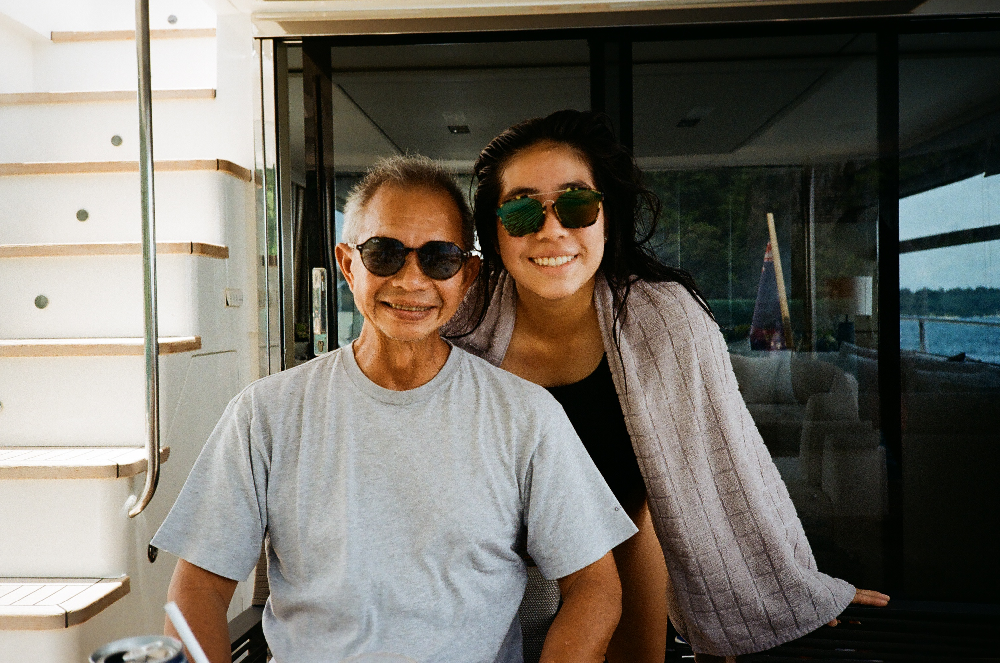

So how did my passion in film photography begin? For me film photography started when my dad handed me my first
camera: Yashica TL Electro X. Little did I know this was just the beginning to one of my most invested hobbies.
At a young age I've always been surrounded by the arts and creativity. My dad loved taking me to art museums
where I would ponder for hours and couldn't explain why. My grandfather also has a passion in photography and
the camera that I was gifted was a hand-me-down from him to my dad then to me. I started exploring with the
manual functions of it and there I found myself pondering and mesmerized with the shutter speed dial and
aperture ring. From there I decided I had to start by learning the functions of film photography from simplicity
to the complexity.

Film photography has captivated a certain aspect of delicacy I've never previously experienced. It consisted of
a tangible quality that cannot be replicated when taking digital pictures. I relished the intentional and
intricate process and the detail that goes into each shot. Through this hobby I am able to slow down and
appreciate the little things from the sunlight to the moments that cannot be erased. My favorite aspect about
shooting film is the fact that we cannot instantly see it. Many may find this a hassle, but for me that is one
of the most unique facet. With every facet a lot of love and care goes into these pictures so when you do
develop the results, no matter how they turn out, you know you've devoted an immense connection with it. In
addition to that, every single photo you take will never turn out the same. I appreciate the art of difference
and that allows me to embrace every mistakes, small or big, because at the end of the day it contributes value
to the bigger picture.